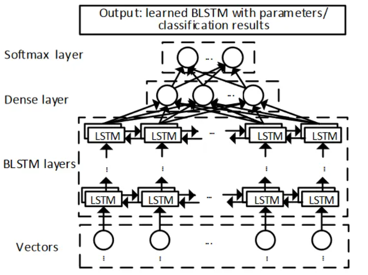
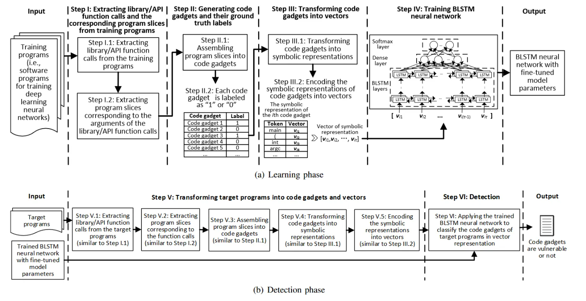
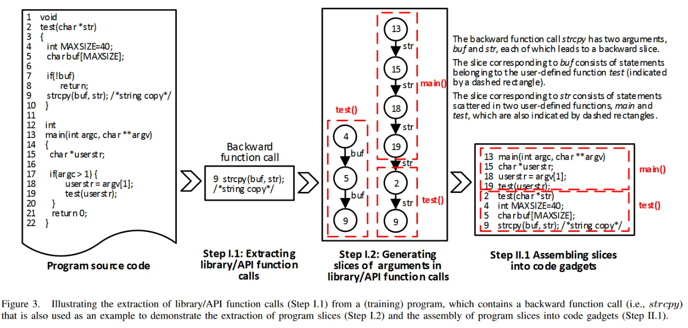
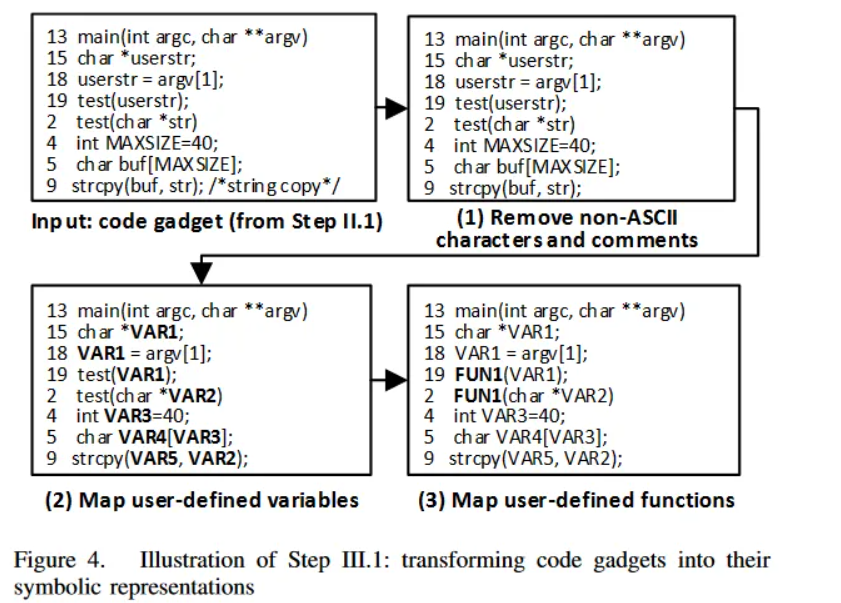

VulDeePecker: A Deep Learning-Based System for Vulnerability Detection
下面分享一篇我发表在安全学术圈上的论文笔记。原文
原文标题：VulDeePecker: A Deep Learning-Based System for Vulnerability Detection
原文作者：Zhen Li, Deqing Zou, Shouhuai Xu, Xinyu Ou, Hai Jin, Sujuan Wang, Zhijun Deng, Yuyi Zhong
发表期刊：Proceedings 2018 Network and Distributed System Security Symposium 原文链接：https://www.ndss-symposium.org/wp-content/uploads/2018/02/ndss2018_03A-2_Li_paper.pdf
笔记作者：senu11@SecQuan
笔记小编：ourren@SecQuan
1.Background
软件漏洞的自动检测是一个重要的研究课题，但是该问题的现有解决方案依赖于人类专家来定义特征，并且经常导致高漏报率。作者提出基于深度学习的进行漏洞检测来开展研究，使用code gadget（一行行的代码，在数据依赖或控制依赖方面和语义上相互关联）来表示程序，然后将它们转换为向量。设计并实现了一个基于深度学习的漏洞检测系统，称为Vulnerability Deep Pecker (VulDeePecker)。为了评估 VulDeePecker，提出了第一个用于深度学习方法的漏洞数据集。进一步将VulDeePecker应用于Xen、Seamonkey和Libav 3个软件产品，检测到4个漏洞，这些漏洞未在NVD报告，但在发布这些产品的更高版本时被厂商修补。
2.Data-set
https://github.com/CGCL-codes/VulDeePecker
数据集源自 NIST 维护的两个数据源：NVD和SARD(软件保障参考数据集)项目。该数据集包含61638个code gadget，其中17725个易受攻击的code gadget和43913个不易受攻击的code gadget。在易受攻击的17725个code gadget中，10440个code gadget对应缓冲区错误漏洞（CWE-119），其余7285个code gadget对应资源管理错误漏洞（CWE-399）。
2.1.code gadget
为了生成code gadget，原文提出了关键点的启发式概念，可以将其视为一个“镜头”，通过它可以从某个角度表示程序。关键点的启发式概念在某种意义上可以看作是漏洞的“中心”或者暗示漏洞存在的代码段。
由于观察到许多漏洞与library/API 函数调用有关，原文专注于使用library/API 函数调用的特定关键点来证明其在基于深度学习的漏洞检测中的有用性，调查其他类型关键点的有用性留作未来研究。
对于library/API函数调用使用不当导致的漏洞，重点在于library/API函数调用；对于数组使用不当造成的漏洞，关键在数组。一类漏洞可能有多种关键点，例如缓冲区错误漏洞可能对应以下关键点：library/API函数调用、数组和指针。同一种关键点可能存在于多种类型的漏洞中，例如缓冲区错误和资源管理错误漏洞都可能包含library/API函数调用的关键点。
对应library/API函数调用的关键点，可以通过程序的数据流或控制流分析的方式生成code gadgets，这方面有现成的算法和商业产品，如Checkmarx，Checkmarx 根据人类专家手动定义的一些规则来检测漏洞。原文不使用它的规则进行漏洞检测，但将比较 VulDeePecker 的有效性。
关于数据集具体怎样生成，读者认为单独拿出来不利于文章的结构表述，在VulDeePecker系统架构一节的learning phase中的第一步和第二步会详细介绍。
3.Guiding Principles
为了更好的使用深度学习检测漏洞，提出了三个基本问题，在问题的基础上引出了三点guiding principles。
3.1.哪种程序表示合适？
因为向量需要保留程序的语义信息，所以不能随意将程序转换为向量。可以使用一些中间表示作为程序与其向量表示之间的“桥梁”，这是深度学习的输入。
Guiding Principle 1：程序可以首先转换为一些中间表示，这些表示可以保留程序元素之间的语义关系（例如，数据依赖性和控制依赖性）。然后，可以将中间表示转换为向量表示，即神经网络的输入。
Guiding Principle 1 直接导致code gadget的中间表示出现，其灵感来自代码重用攻击上下文中的gadget，其是少量且不一定连续的代码行。
3.2.哪种粒度合适？
由于不仅需要检测程序是否存在漏洞，而且还需要确定漏洞的位置，所以应该使用更细的粒度来进行基于深度学习的漏洞检测。也即漏洞检测不应该在程序或函数级别进行，其含有大量代码，过于粗粒度，并且确定漏洞的位置本身就是一项艰巨的任务。
Guiding Principle 2:为了帮助确定漏洞的位置，程序应该以比将程序或函数作为一个单元处理时更细的粒度来表示。上述code gadget表示自然满足guiding principle 2。
3.3.哪种神经网络合适？
神经网络在图像处理、语音识别和自然语言处理等领域非常成功，但是这些领域不同于漏洞检测，即很多神经网络可能并不适合漏洞检测，需要一些guiding principle选择适合漏洞检测的神经网络。
Guiding Principle 3:由于一行代码是否包含漏洞可能取决于上下文，因此能够应对上下文的神经网络可能适用于漏洞检测。
由于上下文在自然语言处理中也很重要，所以用于自然语言处理的神经网络可能适用于漏洞检测。由于程序函数调用的参数受早、中、后期操作的影响，故将上下文的概念引入本文。
有许多用于自然语言处理的神经网络，作者先从RNN开始讨论。RNN可以有效地处理顺序数据，且已用于程序分析（但不是用于漏洞检测目的），但是RNN 存在梯度消失 (VG) 问题，会导致模型训练无效。VG 问题由 RNN 的双向变体继承而来（inherited by the Bidirectional variant of RNNs），称BRNN。VG 问题可以通过将 RNN 引入记忆单元解决，有长短期记忆 (LSTM) 单元和门控循环单元 (GRU) 单元。GRU 在语言建模方面并不优于 LSTM ，故作者选择 LSTM 进行漏洞检测，但是将其与 GRU 的比较推迟到未来的工作中。 LSTM 也可能不足以进行漏洞检测，函数调用的参数可能会受到程序前面语句的影响，也可能会受到后面语句的影响，而LSTM是单向的。这表明单向 LSTM 可能不够用，所以作者使用双向 LSTM (BLSTM) 进行漏洞检测。下面是BLSTM的简单结构和解释。

上图是 BLSTM 神经网络的结构，具有多个 BLSTM 层、一个密集层和一个 softmax 层。输入是向量； BLSTM 层有前向和后向两个方向。 BLSTM 层包含一些复杂的 LSTM 单元，作者将其视为黑盒；密集层减少来自 BLSTM 层向量的维数； softmax层将从密集层接收到的低维向量作为输入，负责表示和格式化分类结果，为学习阶段(VulDeePecker的其中一个阶段)的神经网络参数更新提供反馈。学习阶段的输出是模型参数微调的BLSTM神经网络，检测阶段的输出是分类结果。
4.VulDeePecker系统架构
下面是整个系统架构，有两个阶段：学习阶段和检测阶段。学习阶段的输入是大量的训练程序，其中一些包含一个或多个已知漏洞的，另一些则不是。 学习阶段的输出是漏洞模式，被编码到 BLSTM 神经网络中。

4.1.learning phase
学习阶段有 4 个步骤。
4.1.1.步骤1：提取library/API 函数调用和相应的程序切片
有两个子步骤。
1）步骤1.1：提取library/API函数调用
原文将library/API函数调用分为两类：前向library/API函数调用和后向library/API函数调用。前向library/API 函数调用是直接从外部输入（例如命令行、程序、套接字或文件）接收一个或多个输入的函数调用，后向library/API 函数调用是不直接从程序运行环境接收任何外部输入的函数调用。

上图(原文中为图3，在下文中也称为图三)显示了后向library/API 函数调用 strcpy（第 9 行）的示例，由于它不直接接收任何外部输入，所以是一个后向的library/API 函数调用。
之所以强调前向和后向library/API 函数调用之间的区别，是由于对于前向library/API 函数调用，受输入参数影响的语句很关键，因为可能容易受到不正确参数值的影响；对于后向的library/API 函数调用，影响参数值的语句很关键，可能使library/API 函数调用受攻击。观察到的这种现象将被用来指导code gadget的向量表示的启发式填充。
2）步骤1.2：提取程序切片
该步骤生成 从训练程序中提取的 library/API 函数调用的参数 相对应的程序切片。定义了两种切片：前向切片和后向切片，其中前向切片对应于受相关参数影响的语句，后向切片对应于可以影响相关参数的语句。原文利用商业产品 Checkmarx 的数据依赖图，来提取这两种切片。基本思想如下：
a).对于前向library/API 函数调用中的每个参数，生成一个或多个前向切片，后者对应于与参数相关的切片在library/API 函数调用处或之后分支的情况。（For each argument in a forward library/API function call, one or multiple forward slices are generated, with the latter corresponding to the case that the slice related to the argument is branched at, or after, the library/API function call.）
b).对于后向library/API 函数调用中的每个参数，都会生成一个或多个后向切片，后者对应于与参数相关的多个切片在library/API 函数调用时或之前合并的情况。（For each argument in a backward library/API function call, one or multiple backward slices are generated, with the latter corresponding to the case that multiple slices related to the argument are merged at, or prior to, the library/API function call.）
切片可以超出所讨论的用户定义函数的边界，因为一个程序片由多个语句组成，这些语句可能属于多个用户定义的函数
图 3 显示了一个包含库函数调用 strcpy 的示例程序，有两个参数 buf 和 str。 strcpy 是一个后向函数调用，为每个参数生成一个反向切片。对于参数 buf ，切片由三个语句组成，即程序的第 4、5 和 9 行，属于用户自定义函数test()；对于参数 str，切片由 6 条语句组成，即程序的第 13、15、18、19、2 和 9 行，其中前 4 条属于用户自定义函数 main，后 2 条属于用户自定义函数定义的函数test()。这两个切片是链（即线性结构），因为 Checkmarx 使用链来表示切片，同时切片也可以用树来表示。由于线性结构只能表示一个单独的切片，所以一个library/API函数调用往往对应多个切片。
4.1.2.步骤2：生成训练程序的code gadget及其基本事实标签。
此步骤有两个子步骤。
1）步骤2.1.：将程序切片组装成code gadget
将上一步生成的程序切片组装成code gadget如下：
首先，给定一个library/API 函数调用和相应的程序片段，将属于同一用户定义函数的语句（即代码片段）按照语句在用户定义的函数合并，如果有重复的，删除。在图 3 所示的示例中，属于用户自定义函数test的三个语句（第 4、5 和 9 行）是参数 buf 对应的程序切片，属于自定义函数test的2条语句（第 2 和 9 行）是参数str对应的程序切片的一段。根据这些语句在函数测试中出现的行号，可以得出2 → 4 → 5 → 9 → 9。由于第9行对应的语句重复，剔除重复得到一段汇编语句2 → 4 → 5 → 9，对应函数test。
其次，将属于不同的用户定义函数的语句组装到一个code gadget中。如果属于这些用户定义函数的两条语句之间已经存在顺序，则保留该顺序；否则，使用随机顺序。在图3所示的例子中，属于用户自定义函数main的语句（第13、15、18和19行）和属于用户自定义函数test的语句（第2、4、5、9行)，得到13 → 15 → 18 → 19 → 2 → 4 → 5 → 9，这是库函数调用strcpy对应的code gadget。此code gadget保留了与参数 str 对应的程序切片中包含的用户定义函数的顺序。
2）步骤2.2：标记基本事实
每个code gadget都需要标记为“1”（易受攻击）和“0”（不易受攻击）。如果code gadget对应于训练数据集中已知的漏洞，则将其标记为“1”；否则，标记为“0”。
4.1.3.步骤3：将code gadget转换为矢量表示。
此步骤有两个子步骤。
1）步骤3.1：将code gadget转换为其符号表示
此步骤旨在启发式地捕获程序中的一些语义信息以训练神经网络。首先，删除非 ASCII 字符和注释；其次，将用户定义的变量以一对一的方式映射到符号名称（例如，“VAR1”、“VAR2”）；最后，将用户定义的函数以一对一的方式映射到符号名称（例如，“FUN1”、“FUN2”）。注意当多个函数出现在不同的code gadget中时，可能会映射到相同的符号名称。如下图展示了此过程。

2）步骤3.2：将符号表示编码为向量
每个code gadget都需要通过其符号表示编码为向量。为此，通过词法分析将符号表示中的code gadget划分为一系列标记，包括标识符、关键字、运算符和符号。例如，符号表示中的code gadget，“strcpy(VAR5, VAR2); ” 由 7 个标记的序列表示：“strcpy”, “(”, “VAR5”, “,”, “VAR2”, “)”, “;”。
这会形成大量的令牌语料库。使用 word2vec 将标记转换为向量，由于code gadget可能具有不同数量的令牌，因此相应的向量可能具有不同的长度。由于 BLSTM 采用等长向量作为输入，因此需要进行调整。为此引入参数 τ 作为与code gadget对应的向量的固定长度。
当向量小于 τ 时，有两种情况：如果code gadget是从一个反向切片生成的，或者是通过组合多个反向切片生成的，在向量的开头填充零；否则，将零填充到向量的末尾。
当一个向量大于τ时，也有两种情况：如果code gadget是从一个反向切片生成的，或者是多个反向切片组合生成的，删除向量的开头部分；否则，删除向量的结尾部分。
每个code gadget都表示为一个 τ 位向量。向量的长度与 BLSTM 每一层隐藏节点的数量有关，这是一个可以调整的参数，以提高漏洞检测的准确性。
步骤4：训练 BLSTM 神经网络
将code gadget编码成向量并获得它们的真实标签后，训练 BLSTM 神经网络。
4.2.detection phase
上述BLSTM网络输出哪些向量易受攻击（“1”）或不易受攻击（“0”）。如果code gadget易受攻击，它会确定目标程序中漏洞的位置。如图 2(b) 中突出显示的那样，此阶段有两个步骤。
4.2.1.步骤5：将目标程序转化为code gadget和向量
五个子步骤。
• 步骤1：从目标程序中提取library/API 函数调用（类似于步骤 1.1）。
• 步骤2：根据library/API 函数调用的参数提取程序切片（类似于步骤1.2）。
• 步骤3：将程序片段组装成code gadget（类似于步骤2.1）。
• 步骤4：将code gadget转换为符号表示（类似于步骤3.1）。
• 步骤5：将code gadget的符号表示编码为向量（类似于步骤3.2）。
4.2.2.步骤6：检测
此步骤使用学习过的的 BLSTM 神经网络对与从目标程序中提取的code gadget相对应的向量进行分类。当一个向量被归类为“1”（即易受攻击）时，这意味着相应的code gadget是易受攻击的，并且漏洞的位置被确定了。否则，相应的code gadget被归类为“0”（即不易受攻击）。